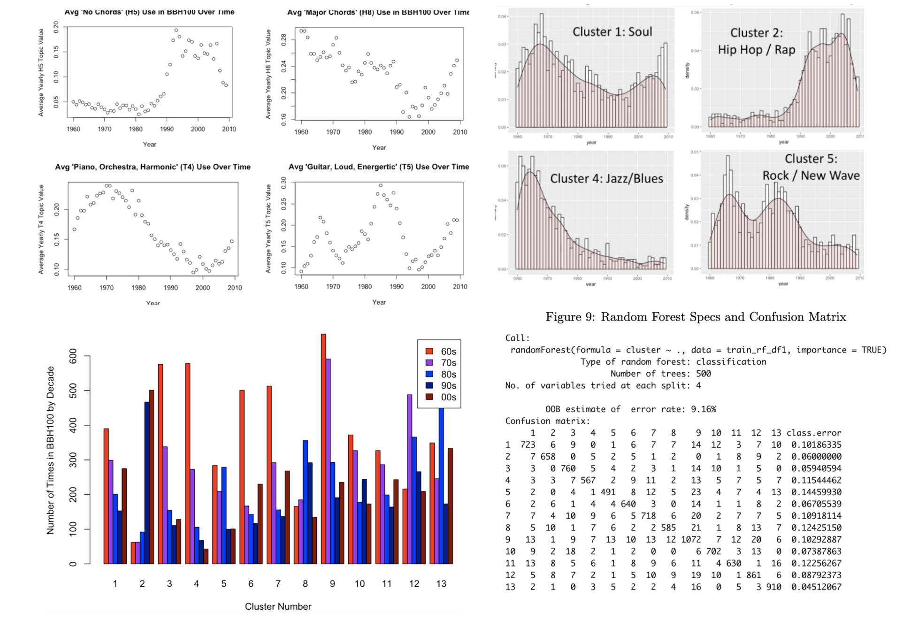

Data Science Project: Evolution of Popular Music | Github

In this project, I analyze data from every song in the Billboard Hot 100 from 1960 - 2010 in an attempt to understand which quantitative music features contribute to shifts in the musical zeitgeist. Through the random decision forest algorithm, I then predict the era and style of a given song based upon 16 quantitative musical features.
While not computer science related, I thought it'd be nice to include one of my creative endeavors on this page. "The Infinite Dream" is a culmination of my musical work from Summer 2021 (all produced in Logic Pro X). It has no lyrics, and I can only describe the music style as atmospheric and synthy. Enjoy!